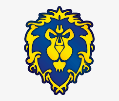

Acesta este un joc MMORPG (massively multi-player online role playing game) care a fost lansat in 2004.
World of Warcraft a castigat premiul Jocul anului in 2005 si 2006 si a inceput sa creasca pana in 2010.
World of Warcraft sau WoW contine 2 tabere: Alianta si Hoarda. Fiecare tabara are mai multe rase din care poate alege jucatorul.
Alianta:

Hoarda:
Clasele disponibile in joc sunt: